Kenya National Hospital (KNH) — UniHealth Phase 1 Pilot
Version 1.1 · June 2026 · Ministry of Health · Kenya National Health Information System Confidential — for authorised facility staff and patients · DOC-UI-001
1. Introduction
This manual describes how to use the UniHealth web application — the React single-page application that powers clinical, administrative, laboratory, pharmacy, and patient-facing workflows. It applies to all six production role dashboards and the UniHealth 360 enterprise portal.
This document is an operational guide. It does not replace your facility’s clinical policies, Ministry of Health directives, or statutory obligations under the Kenya Data Protection Act (KDPA) 2019.
Doctor/dashboard/doctor
Nurse/dashboard/nurse
Patient/dashboard/patient
Administrator/dashboard/admin
Laboratory/dashboard/lab
Pharmacy/dashboard/pharmacy
UniHealth 360/portal → /modules/*
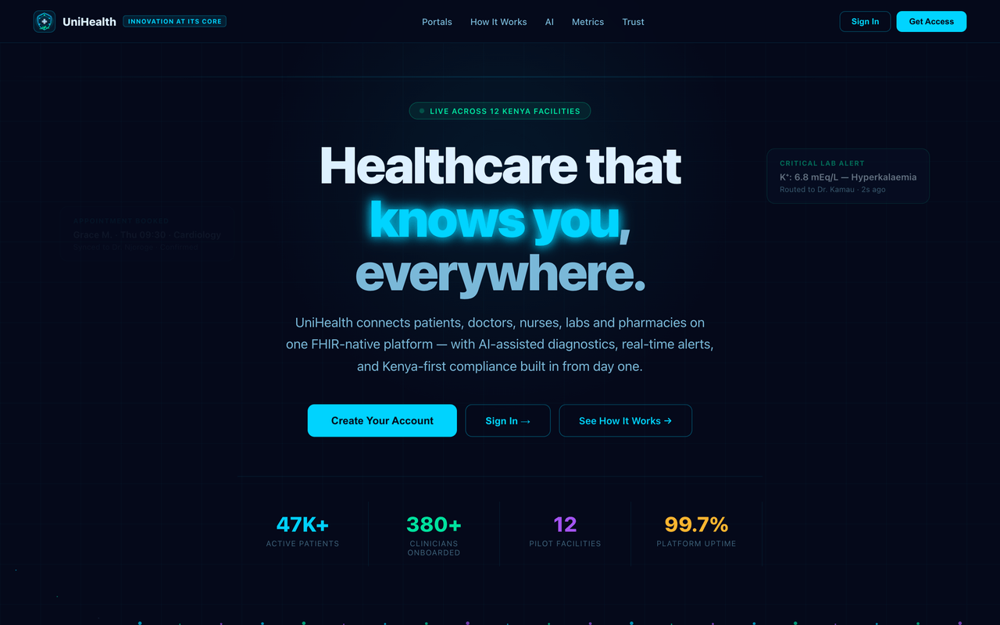
Figure 1. UniHealth marketing home page. Select Sign in to access your role dashboard, or open the UniHealth 360 portal for the module catalog.
2. System Requirements
Requirement
Details
Browser
Recent Chrome, Firefox, Safari, or Edge (desktop recommended)
Network
Access to facility UniHealth gateway (staging: port 8100)
Credentials
Issued by facility HR/IT; staging test accounts in technical runbook
Screen
1280×720 minimum; 1440×900 recommended for clinical workstations
Development / staging URLs
Page
URL
Web application
http://localhost:5173
Sign in
http://localhost:5173/sign-in
Patient registration
http://localhost:5173/register
UniHealth 360 portal
http://localhost:5173/portal
API gateway
http://localhost:8100
Production URLs are provided by your facility IT team.
3. Sign-in & Authentication
Every user completes a four-step sign-in flow: role selection → credentials → multi-factor authentication (MFA) → launch dashboard.
Step 1 — Select your role
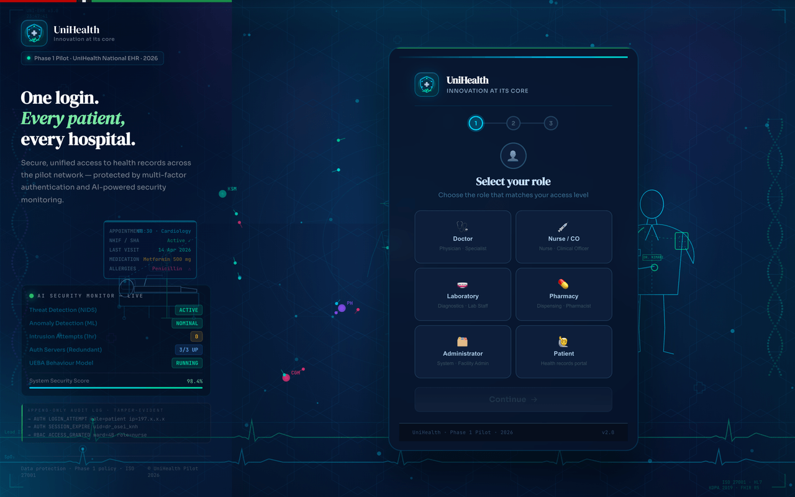
Figure 2. Choose the tile matching your job function. Badges indicate pilot access level.
Open /sign-in and review the six role tiles.
Click your role (Doctor, Nurse/CO, Laboratory, Pharmacy, Administrator, or Patient).
Click Continue to proceed.
Step 2 — Enter credentials
Staff (doctor, nurse, lab, pharmacy, admin)
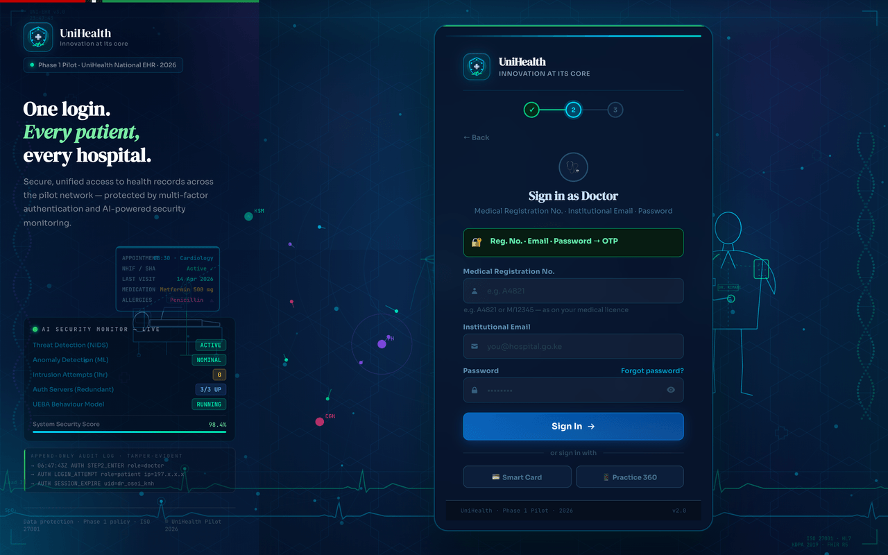
Figure 3. Staff sign-in: professional registration number, institutional email, password, and security CAPTCHA.
Registration number — as printed on your licence (e.g. medical registration for doctors).
Institutional email — facility-issued address.
Password — minimum 8 characters with uppercase and numbers.
CAPTCHA — complete the arithmetic security check.
Alternative: Smart Card or Practice 360 where enabled.
Patient
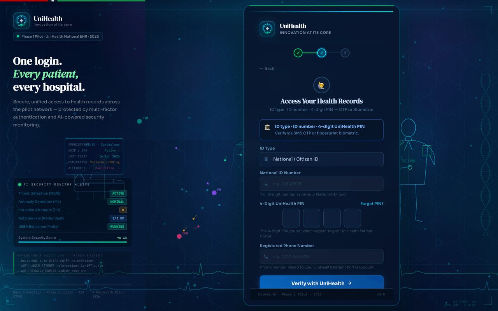
Figure 4. Patient portal sign-in using national ID (or passport), UniHealth PIN, and mobile number.
ID type and number (National ID, passport, etc.).
Four-digit UniHealth PIN set at registration.
Mobile number in +254… format.
Step 3 — Multi-factor authentication
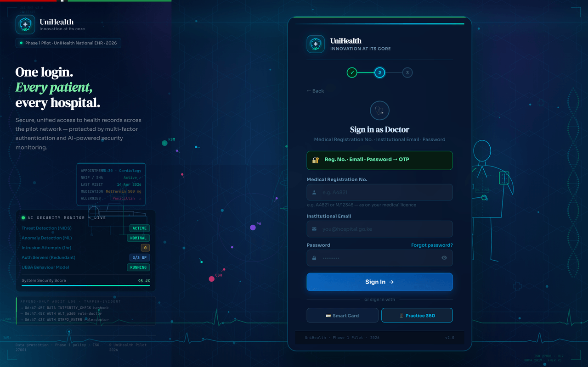
Figure 5. MFA options: email/SMS OTP (six digits), biometric scan, or Practice 360 push approval.
Method
Typical use
Email OTP
Staff roles
SMS OTP
Patient portal
Biometric
Where hardware is available
Practice 360
Pilot / demo environments
Step 4 — Launch dashboard
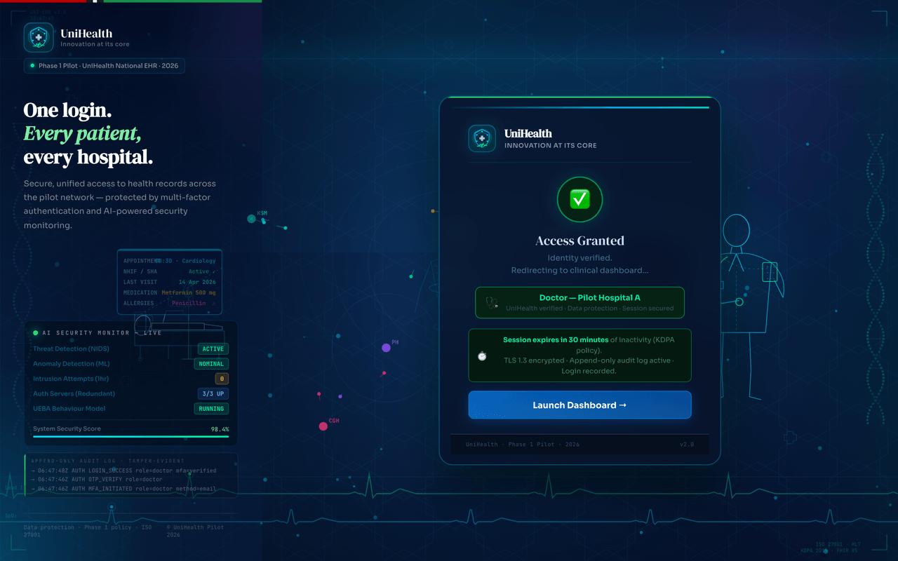
Figure 6. After successful MFA, click Launch Dashboard to open your role-specific workspace.
Patient registration (new users)
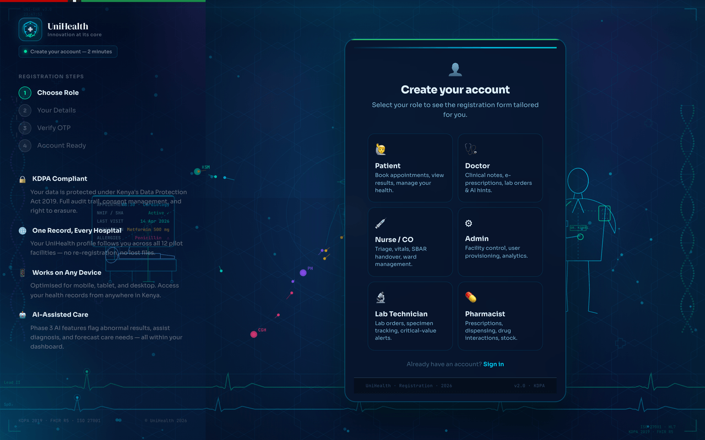
Figure 7. Four-step registration wizard for new patient portal accounts.
Navigate to /register.
Complete identity, contact, UniHealth linkage, and confirmation steps.
Sign in as Patient with your ID and PIN.
NoteStaff accounts are created by administrators — not via self-service registration.
4. Dashboard Layout
All six production dashboards share a consistent shell. Navigation changes the main content area without a full page reload.
Figure 8. Standard layout: sidebar navigation, top bar, and main work area with KPI cards and panels.
Element
Function
Sidebar
Primary navigation grouped by clinical or operational sections
Top bar
Page title, breadcrumbs, search, notifications, connection status
Main content
KPIs, tables, forms, modals, AI panels
Toasts
Short confirmations after actions (auto-dismiss)
MOH stripe
National programme branding and compliance indicator
Sign out
Ends session and returns to sign-in
5. Doctor Dashboard
URL:/dashboard/doctor · Audience: Physicians and specialists
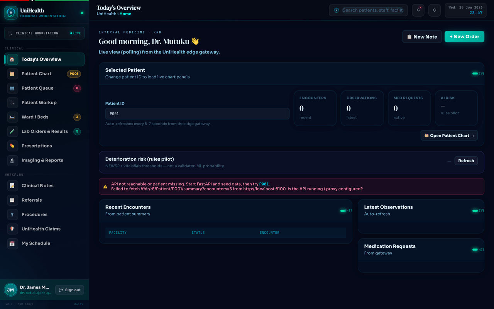
Figure 9. Doctor dashboard — Today's Overview with clinical KPIs, patient queue, and AI Assist risk panel.
Navigation
Clinical
Menu
Purpose
Today's Overview
Shift summary, KPIs, alerts
Patient Chart
Longitudinal record for active patient
Patient Queue
Outpatient / consult waiting list
Patient Workup
Structured assessment and plan
Ward / Beds
Inpatient list and bed status
Lab Orders & Results
Order tests, review and acknowledge results
Prescriptions
Create and manage medication orders
Imaging & Reports
Request studies, read reports
Workflow
Menu
Purpose
Clinical Notes
Progress, admission, discharge notes
Referrals
Inter-facility and specialty referrals
Procedures
Log procedures and consent
UniHealth Claims
Insurance and cover claims
My Schedule
Clinic and theatre blocks
Key workflows
See the next outpatient
Open Patient Queue from the sidebar.
Select the next patient or use the call-next action.
Review Patient Chart or Patient Workup.
Document the encounter in Clinical Notes.
Order laboratory tests
From chart or Lab Orders & Results, choose New lab order.
Select tests and set priority (routine / urgent).
Submit — order appears on the Laboratory dashboard queue.
Prescribe and discharge
Add medications under Prescriptions; pharmacy receives the order.
For discharge: open patient from Ward / Beds, complete summary, confirm bed release.
6. Nurse Dashboard
URL:/dashboard/nurse · Audience: Nurses and clinical officers
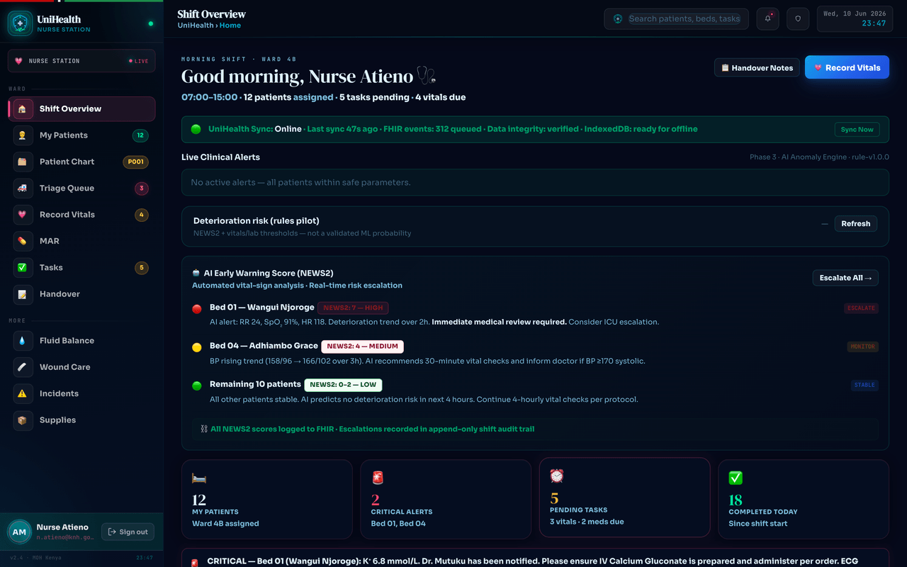
Figure 10. Nurse dashboard — Shift Overview with assigned patients, vitals due, and triage badges.
Navigation
Section
Key menus
Ward
Shift Overview, My Patients, Patient Chart, Triage Queue, Record Vitals, MAR, Tasks, Handover
More
Fluid Balance, Wound Care, Incidents, Supplies
Record vitals
Open Record Vitals and select the patient.
Enter BP, HR, RR, temperature, SpO₂, glucose, pain score, and AVPU as required.
Save — values appear on the doctor chart and feed AI risk rules when online.
MAR and handover
MAR — filter due doses; mark given, held, or refused with reason.
Handover — complete SBAR-style notes for each assigned patient before shift end.
7. Patient Portal
URL:/dashboard/patient · Audience: Patients and authorised carers
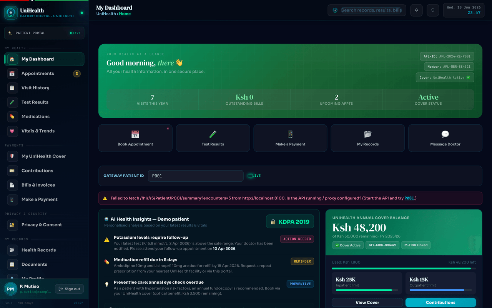
Figure 11. Patient portal — My Dashboard with health summary, notifications, and quick links to appointments and payments.
Navigation
Section
Menus
My Health
My Dashboard, Appointments, Visit History, Test Results, Medications, Vitals & Trends
Payments
My UniHealth Cover, Contributions, Bills & Invoices, Make a Payment
My Records
Health Records, Documents, My Profile
Privacy & Security
Privacy & Consent (KDPA 2019)
Common tasks
View lab results
Check notifications on My Dashboard.
Open Test Results for values and reference ranges.
Contact your clinician for interpretation — the portal displays data, not medical advice.
Pay a contribution (M-PESA)
Review amount due under Contributions.
Go to Make a Payment → select M-PESA.
Approve the STK push on your phone; confirmation appears in transaction history.
Manage privacy
Open Privacy & Consent.
Review and toggle consent categories; changes are audit-logged per KDPA 2019.
8. Administrator Console
URL:/dashboard/admin · Audience: Facility and system administrators
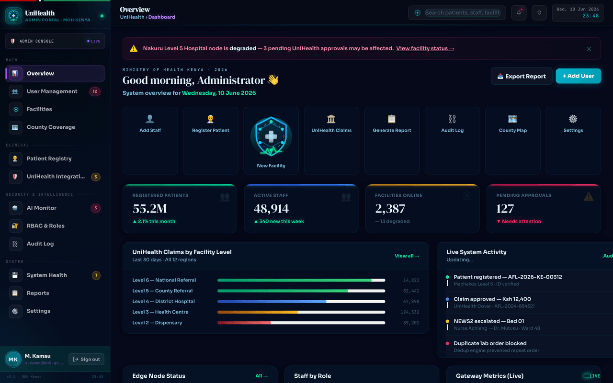
Figure 12. Administrator overview — user management, facility registry, AI monitor, and system health.
Section
Menus
Main
Overview, User Management, Facilities, County Coverage
Clinical
Patient Registry, UniHealth Integration
Security & Intelligence
AI Monitor, RBAC & Roles, Audit Log
System
System Health, Reports, Settings
Onboard staff
User Management → Add user with role and facility.
Administration, HR & Payroll, AI Analytics, Research, Patient Portal*
* Laboratory, Pharmacy, and Patient Portal link to production dashboards at /dashboard/* to avoid duplicate interfaces.
12. AI Assist (Pilot)
Clinical disclaimer
AI Assist on doctor and nurse dashboards uses rules-based clinical decision support (NEWS2, vitals/lab thresholds). It is a pilot — not diagnostic AI. Clinical judgement always applies.
Do
Don't
Use as a triage hint alongside examination
Treat the score as a standalone diagnosis
Escalate per local protocol when score is high
Override judgement without documentation
Note the pilot disclaimer on the panel
Assume full ML validation where only rules are deployed
Patient dashboards may show AI Health Insights (informational trends). Technical scope is documented in the project AI assist scope reference.
13. Privacy & Compliance
KDPA 2019 — patients control consent via Privacy & Consent; administrators maintain audit trails.
MOH alignment — facility and county tiles support national visibility programmes.
Credentials — never share PINs, passwords, or OTP codes.
Session hygiene — sign out on shared workstations; use Sign out all sessions if compromise is suspected.
v2 shell — use production dashboard where linked from portal
15. Quick Reference
Role
Sign-in tile
Dashboard URL
First menu to open
Doctor
Doctor
/dashboard/doctor
Today's Overview
Nurse
Nurse / CO
/dashboard/nurse
Shift Overview
Patient
Patient
/dashboard/patient
My Dashboard
Administrator
Administrator
/dashboard/admin
Overview
Laboratory
Laboratory
/dashboard/lab
Overview
Pharmacy
Pharmacy
/dashboard/pharmacy
Overview
Enterprise
—
/portal
Launch Clinician Portal
PDF editions
Pre-built PDFs: UniHealth-Web-User-Manual.pdf (full manual) and UniHealth-Web-User-Manual-Cover.pdf (branded cover). Or print this HTML with “Background graphics” enabled.
UniHealth Web Interface — Complete User Manual v1.1 · June 2026
Ministry of Health aligned · Kenya Data Protection Act 2019 · UniHealth Phase 1 Pilot